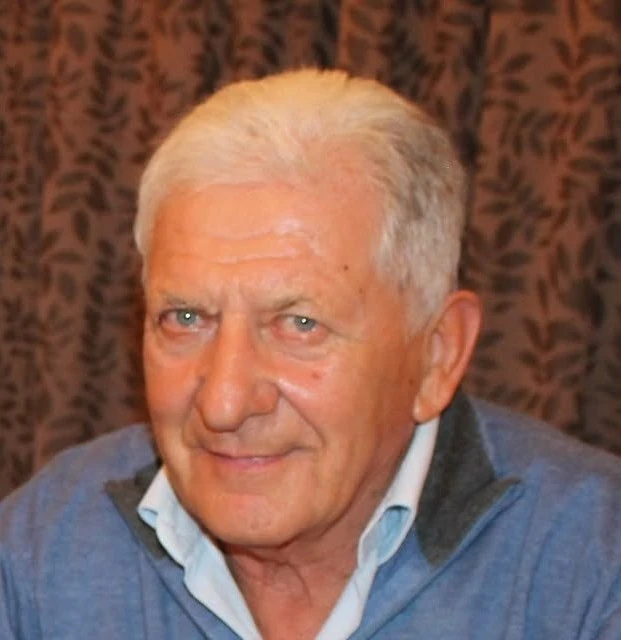

2° Memorial Giancarlo Cavallin
IL MEMORIAL
Un appuntamento sportivo che custodisce un ricordo e lo porta avanti attraverso la passione per la bicicletta.

Una memoria che unisce
Pedalare insieme. Ricordare insieme.
Il Gravel Carano 2027 è dedicato alla memoria di Giancarlo Cavallin. Il Gatto Bike Team desidera celebrare il suo ricordo attraverso una giornata di sport, amicizia e condivisione.
La sua fotografia accompagna il racconto del Memorial: un ricordo da custodire con rispetto, attraverso lo sport e la comunità.
Contatta gli organizzatori